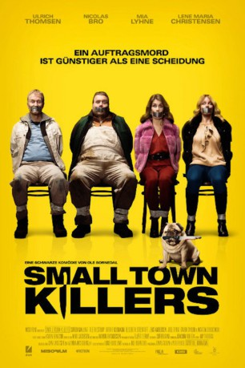

#7448 Small Town Killers
 
 IMDB-Wertung: 5.3 / 10
IMDB-Wertung: 5.3 / 10  Metascore: 0
Metascore: 0 
Ein Auftragskiller ist günstiger als eine Scheidung. Nach diesem Motto versuchen die beiden Geschäftsmänner Ib und Edward ihre unliebsam gewordenen Ehefrauen loszuwerden. Doch diese entpuppen sich als klüger als gedacht und haben sich längst eine eigene Auftragskillerin besorgt. Damit ist es mit der Idylle im dänischen Hinterland vorbei...
Jahr: 2017
Dauer: 89 Minuten
FSK: 16
Land: Dänemark Studio: DCM Film DistributionTonspuren:
Untertitel:
Auflösung: 1080p (1920x808) Größe: 3553 MB
Genre: Drama, Komödie, Krimi
Regisseur: Ole Bornedal
Drehbuch: Ole Bornedal
Soundtrack:
Darsteller:
Datei: X:\2017(N-Z)\Small Town Killers (2017, FSK16, 1920x808).mkv seit 10.11.2017
Festplatte: HD 2017(A-Z)-2018(A-F)
 Es gibt insgesamt 170 Filme in der Gruppe '2017(N-Z)'
Es gibt insgesamt 170 Filme in der Gruppe '2017(N-Z)'